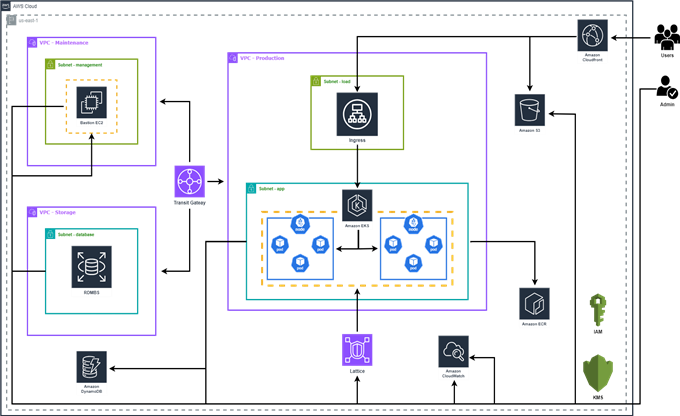

개요
당신은 Wordskills에서 클라우드 솔루션을 활용하여 어플리케이션이 동작할 수 있는 IT 인프라를 구성하는 업무를 맡고 있습니다. 아래 다이어그램과 주어지 요구사항, 클라우드의 설계원칙인 고가용성, 확장성, 비용, 보안 등을 잘 고려하여 인프라를 구축하여야 합니다.
다이어그램

사용 기술
| 분류 | 항목 |
|---|---|
| AWS | VPC, EC2, ELB, EKS, ECR, RDS, Dynamodb, CloudFront, CloudWatch, S3, IAM, KMS |
| 개발언어/프레임워크 | golang/gin, docker, html |
선수 유의사항
참고※ 다음 유의사항을 고려하여 요구사항을 완성하시오.
- 문제에 제시된 괄호박스 < > 는 변수를 뜻함으로 선수가 적절히 변경하여 사용해야 합니다.
- 문제 풀이와 채점의 효율을 위해 Security Group의 80/443 Outbound는 Anyopen하여 사용할 수 있도록 합니다.
- Bastion EC2는 채점 시 사용되기 때문에 종료되거나 연결 문제, 권한 문제 등으로 발생할 수 있는 불이익을 받지 않도록 주의하시기를 바랍니다.
- 모든 리소스는 버지니아 북부(us-east-1) 리전에 구성합니다.
- 제공자료는 수정 없이 사용합니다. 제공자료를 수정해서 사용하면 불이익을 받을 수 있습니다.
- 문제에서 주어지지 않는 값들은 AWS Well-Architected Framework 6 pillars를 기준으로 적절한 값을 설정해야 합니다.
- 불필요한 리소스를 생성한 경우, 감점의 요인이 될 수 있습니다. (e.g. VPC 추가 생성)
- 모든 리소스의 이름, 태그, 변수과 변수는 대소문자를 구분합니다.
- 1페이지의 다이어그램은 구성을 추상적으로 표현한 그림으로, 세부적인 구성은 아래의 요구사항을 만족시킬 수 있도록 합니다. (ex. 서브넷이 2개 이상 존재할 수 있습니다.)
3. Network Configuration
- Cloud내에 가상 사설 Network를 구축할 수 있도록 아래의 설명과 Reference01의 표를 참고하여 VPC를 구성하도록 합니다.
- Application이 구동되는 Subnet에서는 Image Download 시 내부 Network만을 거쳐 내려 받을 수 있도록 구성합니다. (ecr.dkr , s3 Endpoint를 사용해야 합니다.)
wsc2024-ma-vpc내에 발생하는 Network Traffic 데이터를 AWS CloudWatch에 Monitoring 하기 위한 작업을 해줍니다.- Bastion Server에서는 ECR Image를 Download 할 수 없도록 설정합니다. (단, 5번에서 지정한 IAM 설정은 수정하거나 추가할 수 없습니다.)
4. Transit Between VPC
- 해당 Architecture에서는 3개의 VPC로 Network가 분리되어 있습니다.
- 각 VPC안에 구축된 Infra들을 서로 통신이 되어야지 해당 과제의 목적이 완성됩니다.
- 각 VPC들을 통신시키기 위하여 Transit Gateway를 사용하도록 합니다.
- Transit Gateway Name은
wsc2024-vpc-tgw으로 지정합니다.
| 항목 | 값 |
|---|---|
| ma-tgw-attachment Name Tag | wsc2024-ma-tgw-attach |
| prod-tgw-attachment Name Tag | wsc2024-prod-tgw-attach |
| storage-tgw-attachment Name Tag | wsc2024-storage-tgw-attach |
| ma-tgw-rt Name Tag | wsc2024-ma-tgw-rt |
| prod-tgw-rt Name Tag | wsc2024-prod-tgw-rt |
| storage-tgw-rt Name Tag | wsc2024-storage-tgw-rt |
5. Bastion Server
- 채점을 위해 AWS EC2를 사용하여 Bastion Server를 생성합니다.
- 채점 중 ip가 갑작스럽게 변경되는 상황이 없게끔 재시작시에도 ip는 변경되지 않게 구성하여야 합니다.
- SSH 접근 시 Security을 고려하여 Port Number를 28282로 변경하여야 합니다.
wsc2024-ma-mgmt-sn-aSubnet에서 실행되어야 합니다.- 채점 시 Root user에서 진행하므로 패키지 관련 오류는 없어야 하며, IAM Role은AdministratorAccess Policy만을 사용하여 구성합니다.
- Bastion Server는 채점을 위해서 사용됩니다.
주의잘 못 구성하였을 경우 특정 채점 항목에서 불이익을 받을 수 있으니 주의합니다.
| 항목 | 값 |
|---|---|
| Instance Name Tag | wsc2024-bastion-ec2 |
| Machine Image | Amazon Linux 2023 |
| Instance Type | t3.small |
| Security Group Name Tag | wsc2024-bastion-sg |
| IAM Role Name Tag | wsc2024-bastion-role |
| Required Package | awscliv2 , curl , eksctl , kubectl , jq |
6. Application
- Customer, Product , Order 총 3개의 Application이 존재합니다.
- 제공된 binary는 golang/gin을 사용하여 개발되었으며, x86 시스템에서 빌드하였습니다.
- Application 실행 시 바인딩되는 Port Number는 TCP/8080입니다.
- 또한 3개의 application 전부
/healthcheck를 통하여 Appliation 상태를 확인합니다. (Application 세부 사항은 Reference02 참고)
7. Application Access Control
- 보안과 밀접한 관련이 있는 접근들은 외부로부터 격리를 시켜야 합니다.
- 모든 Application에서는
/healthcheck를 통하여 Server의 health를 판단합니다. - 외부에서 무분별하게 Healthcheck를 사용할 경우 Server에 무리가 갈 수 있습니다.
- Customer Application에서는 해당 부분을 보완하기 위하여 외부에서의
/healthcheck의 접근은 차단시키고, VPC Lattice을 사용하여 Bastion Server에서만 확인할 수 있게끔 구축하여야 합니다. - Service Network Name :
wsc2024-lattice-svc-net
8. RDBMS
- Customer, product Application 데이터를 안정적이고 효율적으로 저장하기 위해서 RDMBS를 구성합니다.
- AWS에서 관리하는 MySQL 호환 엔진을 사용하고, default for major version 8.0으로 Database를 구축하도록 합니다.
- DB관리에 편의를 위하여 Logging과 Monitoring이 활성화 되어있어야 하며, 해당 DB는 4시간 전으로 RollBack 할 수 있어야 합니다.
- Bastion Server에서 해당 RDBMS에 접근할 수 있어야 합니다. (RDBMS 세부 사항은 Reference03 참고)
| 항목 | 값 |
|---|---|
| DB Cluster Name | wsc2024-db-cluster |
| Master username | admin |
| Master password | Skill53## |
| DB instance class | db.t3.medium |
| DB Name | wsc2024_db |
9. NoSQL Database
- order Application의 Database로 AWS에서 제공하는 완전 관리형 No SQL Database Service인 Dynamodb를 사용합니다. (NoSQL Database 세부 사항은 Reference03 참고)
10. Container Registry
- 제공된 application들을 Image화 시킨 후 AWS ECR Repository에 저장하려고 합니다.
- ECR에 Upload 된 Image들은
latest라는 Tag를 가지고 있어야 합니다.
| 항목 | 값 |
|---|---|
| Customer image repository Name | customer-repo |
| Product image repository Name | product-repo |
| Order image repository Name | order-repo |
11. Container Orchestartion
- 제공된 Application을 Container 환경에 배포하기 위해 AWS EKS를 사용합니다.
- EKS Cluster Control Plane에서 발생하는 모든 로그들을 CloudWatch Logs에서 확인할 수 있어야 하며, Secret Resource들은 반드시 KMS Encryption 되어 있어야 합니다.
- 관리의 편리를 위하여 모든 NodeGroup은 ManagedNodeGroup으로 생성하며, 고가용성을 고려하여야 하고, Private 환경에서 NodeGroup이 실행되어야 합니다.
- 주어진 application들은
wsc2024라는 Namespace를 사용하여 EKS Cluster 내에서의 논리적인 분리시켜야 합니다. - 새로운 Version의 EKS Pod가 배포될 수 있기에 무중단 배포를 고려하여 구성하여야 합니다.
| 항목 | 값 |
|---|---|
| EKS Cluster Name | wsc2024-eks-cluster |
| EKS Cluster Version | 1.29 |
DB Application ManagedNodegroup
- Database에 데이터를 저장하는 Application들은 반드시 DB Application NodeGroup에서 운용되어야 합니다.
- 이 외의 다른 Resource들이 존재해서는 안 되며, 고가용성을 고려하여야 합니다.
- 또한 해당 NodeGroup의 Node는
{app:db}라는 Label을 가지고 있어야 합니다.
| 항목 | 값 |
|---|---|
| NodeGroup Name | wsc2024-db-application-ng |
| Node Instance Name Tag | wsc2024-db-application-node |
| Node Instance Type | t3.medium |
Other ManagedNodegroup
- 제공된 Application들을 제외한 나머지 모든 Resource들은 반드시 Other Nodegroup에서 구동되어야 합니다.
- Application Resource들이 존재해서는 안 되며, 고가용성을 고려하여야 합니다.
- 또한 해당 NodeGroup의 Node는
{app:other}라는 Label을 가지고 있어야 합니다.
| 항목 | 값 |
|---|---|
| NodeGroup Name | wsc2024-other-ng |
| Node Instance Name Tag | wsc2024-other-node |
| Node Instance Type | t3.medium |
EKS Delpoyments
| 항목 | 값 |
|---|---|
| customer Application Deployment Name | customer-deploy |
| product Application Deployment Name | product-deploy |
| order Application Deployment Name | order-deploy |
12. Load Balancer
- 외부에서 application으로 접근할 수 있도록 하면서, 부하를 분산할 수 있도록 Load Balancer를 사용하도록 합니다.
| 항목 | 값 |
|---|---|
| Load Balancer Name | wsc2024-alb |
| Load Balancer Scheme | internet-facing |
| Load Balancer Type | Application Load Balancer |
| Load Balancer Listen | HTTP 80 |
13. Static Pge
- 배포된
index.html을 S3를 통하여 정적 콘텐츠를 저장하고 제공합니다. - 사용자가 정상적인 접근을 하였다면
index.html을 보여줘야 하고 Bucket 최상위 경로에 저장되어야 합니다. - Bucket Name은
wsc2024-s3-static-<4자리 영문>으로 지정합니다. - S3 Bucket에 존재하는 Objects들은 외부에서 직접적으로 접근 하는 것을 막고, CloudFront를 통해서만 접근히 가능하도록 해야 합니다.
14. CDN
- 사용자들에게 조금 더 빠른 Service를 제공하기 위하여 AWS Cloudfront를 사용합니다.
- ALB와 S3를 CloudFront를 통하여 하나의 Domain으로 묶어줍니다.
- 사용자가 도메인으로 접근 시 기본으로 S3에
index.html파일을 보여줘야 하고,/v1/*경로로 접근 시 ALB로 Routing 되어야 합니다. (자세한 경로 설명은 Reference02를 참고) - S3에 관한 작업의 경우 정적 콘텐츠이기에 Caching 되어야 합니다.
- 사용자가 HTTP로 접근하여도 HTTPS로 Redirect 되게 설정하도록 합니다.
- 채점 시 오독장을 예방하기 위하여 IPv6는 비활성화 합니다.
- 한국뿐만 아니라 전 세계의 유저가 빠른 속도로 접근할 수 있어야 하며, 하나의 CloudFront만 구성해야 합니다.
15. DNS Security
DNS 위임작업
- 인증받은 DNS를 사용하기 위하여 상위 계정에 존재하는 DNS의 하위 도메인을 위임 받아 사용 하기로 하였습니다.
- 아래 본인에게 해당하는 도메인을 확인하여 Route53 Public Hosted Zone을 생성하고 해당 Hostzone의 NS 레코드 정보를 Github에 Issue로 등록합니다.
- 경기 시작 30분 후 Issue에 등록된 순서대로 위임 작업이 진행됩니다.
- 캐쉬 설정과 잘못된 NS 정보를 전달하지 않도록 주의합니다.
- 위임이 완료되면 테스트를 위하여
my.<hostzone>레코드를 하나 생성하고211.0.0.10이 반환 되도록 구성 합니다.
도메인 형태는 p{비번호}.cloudhrdk{0-2}.com 입니다.
| 비번호 | 도메인 |
|---|---|
| 101-109 | cloudhrdk0.com |
| 110-119 | cloudhrdk1.com |
| 120-129 | cloudhrdk2.com |
선수의 hostzone 이름 예)
101선수 → p101.cloudhrdk0.com
112선수 → p112.cloudhrdk1.com
123선수 → p123.cloudhrdk2.com
테스트용 쿼리 레코드 예)
$ nslookup my.p101.cloudhrdk0.com
...
211.0.0.10
DNS를 이용한 라우팅
- VPC 내부의 서버는 특정 DNS 주소에 대해서 외부 네트워크를 거치지 않고 내부로 안전하게 라우팅을 하고자 합니다.
- 이를 구현하기 위해 Route53 기능을 활용 하고자합니다.
- 과제에 명시된 VPC 내부에서
q1.<hostzone>주소 쿼리 시172.16.0.10가 반환 되어야 합니다. - 하지만 외부에 있는 컴퓨터에서 동일한 레코드 쿼리 시
54.0.0.10을 반환 하도록 합니다. - Route53 기능 외에 host파일 변조, Private Hostzone 생성을 통한 변경, EC2의 네임서버 변경 등 편법을 이용해 해결 하는 경우 정답으로 인정되지 않습니다.
- 반드시 본인이 가지고 있는 cloudhrdk Hostzone에 있는 q1 레코드에 할당된 IP 주소가 반환 되어야 합니다.
주의Private Hosted Zone은 하나라도 생성 시 DNS 관련 항목은 모두 득점 처리 되지 않습니다.
VPC 내부 DNS 쿼리 예)
$ nslookup q1.p101.cloudhrdk0.com
...
Address: 172.16.0.10
외부 DNS 쿼리 예)
$ nslookup q1.p101.cloudhrdk0.com
...
Address: 54.0.0.10
16. CDN Security
CDN 및 DNS 구성
- CloudFront Distribution을 하나를 추가로 생성하고 외부에서
cf.<hostzone>질의 시 연결된 CloudFront의 주소가 나오도록 CNAME 레코드를 생성합니다. - 그리고 웹호스팅을 위해 레코드의
index.html접근 시 "Cloud Skills <비번호>" 문구가 출력 되도록 합니다. - CloudFront에 연결되는 Origin은 본인 AWS 계정에 있는 리소스라면 무엇이든 상관 없습니다.
- 최종적으로 curl 등을 통해 접근 시 아래의 예제와 같이 출력 되어야 합니다.
주의출력되는 비번호가 다르면 득점으로 인정되지 않습니다.
DNS 쿼리 예)
$ nslookup cf.p129.cloudhrdk2.com
...
Name: xxx096kci2yyy.cloudfront.net
Address: 54.19.15.141
웹 접근 예)
$ curl https://cf.p129.cloudhrdk2.com/index.html
Cloud Skills 129
CDN 암호화 연결
- CDN 연결 시 보안을 위해 HTTPS 프로토콜을 사용합니다.
- ACM을 통해 아마존 인증서를 발급하고 생성한 CloudFront Distribution에 연결하도록 합니다.
- 외부에서 HTTPS 프로토콜로
cf.<hostzone>에 접근하면 아마존 인증서를 통해 암호화 된 연결을 사용할 수 있어야 합니다.
17. Kubernetes Security
운영 환경 클러스터 구축
- 운영 환경을 위한 EKS 클러스터를 생성합니다.
prod-<비번호>이름의 가지는 1.30 버전의 클러스터를 생성하고, Managed Node Group을 활용해t3.medium타입 Worker Node 2대가 클러스터에 연결되도록 구성 합니다.- 노드 구성이 완료되면 "prod" 네임스페이스와 "beta" 네임스페이스를 생성합니다.
- EKS 버전과 이름, 노드타입, 네임스페이스 외의 값은 임의로 설정합니다.
- 최종적으로 Pod가 정상적으로 구동될 수 있도록 해야합니다.
이미지 다운로드 제한
- "prod" 네임스페이스에서는 Pod의 이미지 태그에 "latest"가 붙어 있으면 생성이 불가능 하도록 합니다.
- 하지만 "beta" 네임스페이스에서는 "latest" 태그가 붙어 있어도 Pod 생성이 가능해야 합니다.
- 채점시 kubectl을 사용하여 Pod 생성 테스트를 진행합니다.
Label 제한
- "prod" 네임스페이스에서는 "cloudhrdk.com/env: prod" 라는 label이 없으면 Pod 생성이 불가능 해야합니다.
- "beta" 네임스페이스 또한 cloudhrdk.com/env: beta 라는 label이 없으면 Pod 생성이 불가능 해야합니다.
- 채점시 kubectl을 사용하여 Pod 생성 테스트를 진행합니다.
Reference
Reference01
VPC
| Name | Cidr |
|---|---|
wsc2024-ma-vpc |
10.0.0.0/16 |
wsc2024-prod-vpc |
172.16.0.0/16 |
wsc2024-storage-vpc |
192.168.0.0/16 |
Subnet
| Name | Cidr | VPC |
|---|---|---|
wsc2024-ma-mgmt-sn-a |
10.0.0.0/24 |
wsc2024-ma-vpc |
wsc2024-ma-mgmt-sn-b |
10.0.1.0/24 |
wsc2024-ma-vpc |
wsc2024-prod-load-sn-a |
172.16.0.0/24 |
wsc2024-prod-vpc |
wsc2024-prod-load-sn-b |
172.16.1.0/24 |
wsc2024-prod-vpc |
wsc2024-prod-app-sn-a |
172.16.2.0/24 |
wsc2024-prod-vpc |
wsc2024-prod-app-sn-b |
172.16.3.0/24 |
wsc2024-prod-vpc |
wsc2024-storage-db-sn-a |
192.168.0.0/24 |
wsc2024-storage-vpc |
wsc2024-storage-db-sn-b |
192.168.1.0/24 |
wsc2024-storage-vpc |
Routing Table
| Name | Subnet | Gateway |
|---|---|---|
wsc2024-ma-mgmt-rt |
wsc2024-ma-mgmt-sn-awsc2024-ma-mgmt-sn-b |
Internet Gateway ( wsc2024-ma-igw) |
wsc2024-prod-load-rt |
wsc2024-prod-load-sn-awsc2024-prod-load-sn-b |
Internet Gateway ( wsc2024-prod-igw) |
wsc2024-prod-app-rt-a |
wsc2024-prod-app-sn-a |
Nat Gateway ( wsc2024-prod-natgw-a) |
wsc2024-prod-app-rt-b |
wsc2024-prod-app-sn-b |
Nat Gateway ( wsc2024-prod-natgw-b) |
wsc2024-storage-db-rt-a |
wsc2024-storage-db-sn-a |
X |
wsc2024-storage-db-rt-b |
wsc2024-storage-db-sn-b |
X |
Reference02
Customer
API Spec
| Path | Method | Request Format | 값 |
|---|---|---|---|
/v1/customer |
GET | Query String | ?id=xxxxxxx |
/v1/customer |
POST | Request Body | '{"id":"xxxxxx","name":"xxxxxxx","gender":"xxxxxx"}' |
OS Environment
| Environment Key | Description |
|---|---|
MYSQL_USER |
RDBMS연결에 사용할 사용자명 |
MYSQL_PASSWORD |
RDBMS연결에 사용할 사용자 암호 |
MYSQL_HOST |
RDBMS연결에 사용할 호스트 이름 |
MYSQL_PORT |
RDBMS연결에 사용할 포트번호 |
MYSQL_DBNAME |
RDBMS연결에 사용할 데이터베이스 이름 |
product
API Spec
| Path | Method | Request Format | 값 |
|---|---|---|---|
/v1/product |
GET | Query String | ?id=xxxxxxx |
/v1/product |
POST | Request Body | '{"id":"xxxxxx","name":"xxxxxxx","category":"xxxxxx"}' |
OS Environment
| Environment Key | Description |
|---|---|
MYSQL_USER |
RDBMS연결에 사용할 사용자명 |
MYSQL_PASSWORD |
RDBMS연결에 사용할 사용자 암호 |
MYSQL_HOST |
RDBMS연결에 사용할 호스트 이름 |
MYSQL_PORT |
RDBMS연결에 사용할 포트번호 |
MYSQL_DBNAME |
RDBMS연결에 사용할 데이터베이스 이름 |
order
API Spec
| Path | Method | Request Format | 값 |
|---|---|---|---|
/v1/order |
GET | Query String | ?id=xxxxxxx |
/v1/order |
POST | Request Body | '{"id":"xxxxxx","customerid":"xxxxxxx","productid":"xxxxxx"}' |
OS Environment
| Environment Key | Description |
|---|---|
AWS_REGION |
DynamoDB 연결에 사용할 리전 코드 (e.g. ap-northeast-2) |
Reference03
RDBMS Table Name : customer
| Column Name | Data Type | ETC |
|---|---|---|
id |
VARCHAR(255) | - |
name |
VARCHAR(255) | - |
gender |
VARCHAR(255) | - |
RDBMS Table Name : product
| Column Name | Data Type | ETC |
|---|---|---|
id |
VARCHAR(255) | - |
name |
VARCHAR(255) | - |
category |
VARCHAR(255) | - |
DynamoDB Table Name : order
| Key Name | Data Type | ETC |
|---|---|---|
id |
String | PK |
customerid |
String | - |
productid |
String | - |